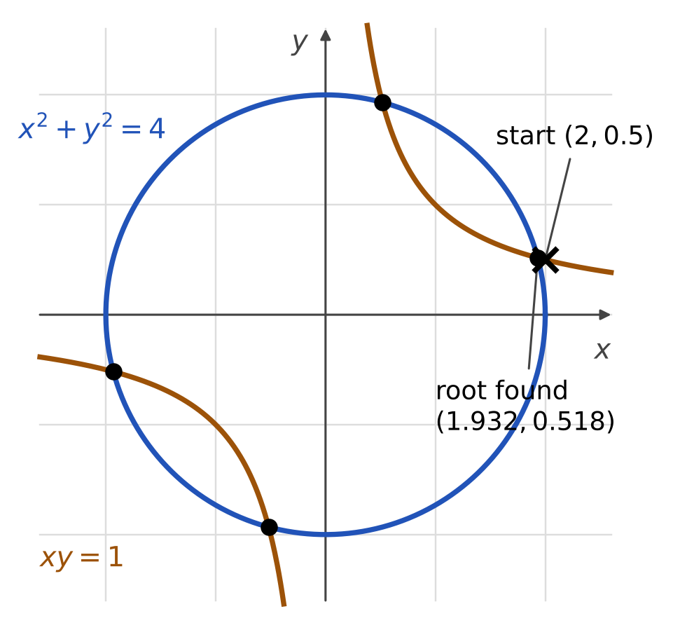
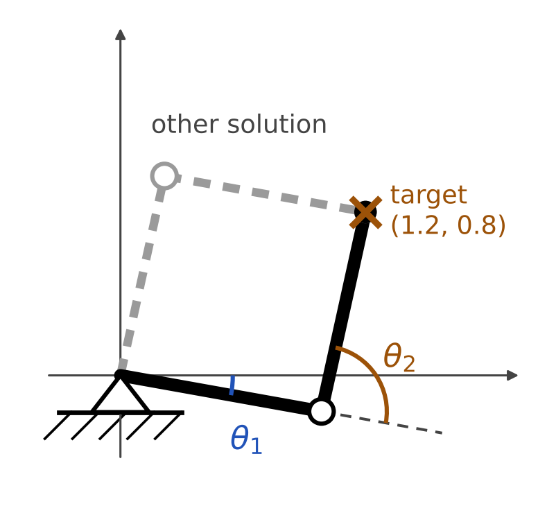

Most of this book is about linear equations, but most of the world is not linear. The angles of a robot arm that put its hand at a given point, the voltages in a circuit with diodes, the concentrations in a chemical equilibrium and the shape of a cable under load all satisfy nonlinear equations. Newton’s method solves them by turning the nonlinear problem into a sequence of linear ones. At each step it replaces the equations by their best linear approximation, the Jacobian of Chapter 22, and solves that linear system. Close to a solution it is astonishingly fast: the number of correct digits roughly doubles at every step.
28.1 Build intuition
The app colours each starting point in the plane by the solution that Newton’s method reaches from it. Click anywhere to see the steps from that point, and the table of how quickly they close in.
In Circle and hyperbola, click near one of the roots. Watch the “distance to root” column: how does the number of zeros after the decimal point change from one step to the next?
In the same system, the coloured regions meet along two straight lines. Click on or very close to one of them. What happens, and why might these lines be special?
In Cube roots of 1, click near the boundaries between colours. Can you predict which root you will reach?
In Circle and parabola, the curves meet in only two points. Click in the dark region below them, then tick Damped steps. What changes?
28.2 The ideas
One equation
For one equation \(f(x) = 0\), Newton’s method replaces \(f\) near the current guess \(x_k\) by its tangent line, \(f(x_k) + f'(x_k)(x - x_k)\), and takes the point where the tangent crosses zero as the next guess: \[
x_{k+1} = x_k - \frac{f(x_k)}{f'(x_k)}.
\] For \(f(x) = x^2 - 2\), starting at \(x_0 = 1\), this gives \(1.5\), \(1.41667\), \(1.4142157\) and \(1.41421356237469\): correct digits 0, 1, 3, 6, 12. Each step roughly doubles them.
Systems
For \(n\) equations in \(n\) unknowns, \(\vect{f}(\vect{x}) = \zerovec\), the tangent line becomes the linear approximation of Chapter 22: \[
\vect{f}(\vect{x}_k + \Delta\vect{x}) \approx \vect{f}(\vect{x}_k) + \M{J}(\vect{x}_k)\,\Delta\vect{x},
\] where \(\M{J}\) is the Jacobian, the matrix of partial derivatives \(\partial f_i/\partial x_j\). Setting the approximation to zero gives a linear system for the step.
ImportantNewton’s method for systems
Starting from a guess \(\vect{x}_0\), repeat:
solve the linear system \(\M{J}(\vect{x}_k)\,\Delta\vect{x} = -\vect{f}(\vect{x}_k)\);
set \(\vect{x}_{k+1} = \vect{x}_k + \Delta\vect{x}\);
until \(\lVert\vect{f}(\vect{x}_k)\rVert\) or \(\lVert\Delta\vect{x}\rVert\) is small enough.
Never compute \(\M{J}^{-1}\): solve the system, by elimination for small problems or by the sparse and iterative methods of Chapter 26 and Chapter 27 for large ones. Each Newton step costs one Jacobian and one linear solve, so all of Parts II to V are at work inside it.
NoteExample 1: a circle and a hyperbola
Find where the circle \(x^2 + y^2 = 4\) meets the hyperbola \(xy = 1\), starting from \((2, 0.5)\) (Figure 28.1).

Figure 28.1: The circle and the hyperbola of Example 1 meet at four points (dots). Newton’s method from \((2, 0.5)\) (cross) converges to the nearest one. The steps are too small to see at this scale.
Solution. Write the equations as \(\vect{f}(x, y) = (x^2 + y^2 - 4, \; xy - 1)\T = \zerovec\). The Jacobian is \[
\M{J} = \mat{2x & 2y \\ y & x}.
\] At \((2, 0.5)\), \(\vect{f} = (0.25, 0)\T\) and \(\M{J} = \mat{4 & 1 \\ 0.5 & 2}\), with determinant 7.5. Solving \(\M{J}\,\Delta\vect{x} = -\vect{f}\), \[
\Delta\vect{x} = -\frac{1}{7.5}\mat{2 & -1 \\ -0.5 & 4}\mat{0.25 \\ 0} = \mat{-0.0667 \\ 0.0167},
\qquad
\vect{x}_1 = \mat{1.9333 \\ 0.5167}.
\] Continuing (see the code below):
\(k\)
\(x_k\)
\(y_k\)
\(\lVert\vect{f}(\vect{x}_k)\rVert\)
0
2
0.5
\(2.5 \times 10^{-1}\)
1
1.933333333333
0.516666666667
\(4.9 \times 10^{-3}\)
2
1.931852741096
0.517637054822
\(3.4 \times 10^{-6}\)
3
1.931851652579
0.517638090204
\(2.5 \times 10^{-12}\)
The residual is roughly squared at each step, and three steps give 12 correct digits. The exact root is \(\bigl(\tfrac{\sqrt{6} + \sqrt{2}}{2}, \tfrac{\sqrt{6} - \sqrt{2}}{2}\bigr)\), which you can find by noticing that \((x + y)^2 = 6\) and \((x - y)^2 = 2\).
NoteExample 2: a robot arm
A planar robot arm has two links of length 1. The first link makes angle \(\theta_1\) with the \(x\) axis, and the second makes angle \(\theta_2\) with the first. Find angles that put the hand at \((1.2, 0.8)\).
Solution. The hand is at \((\cos\theta_1 + \cos(\theta_1 + \theta_2), \; \sin\theta_1 + \sin(\theta_1 + \theta_2))\), so we solve \[
\vect{f}(\theta_1, \theta_2) = \mat{\cos\theta_1 + \cos(\theta_1 + \theta_2) - 1.2 \\ \sin\theta_1 + \sin(\theta_1 + \theta_2) - 0.8} = \zerovec,
\] with Jacobian, writing \(s_1 = \sin\theta_1\), \(c_1 = \cos\theta_1\), \(s_{12} = \sin(\theta_1 + \theta_2)\) and \(c_{12} = \cos(\theta_1 + \theta_2)\), \[
\M{J} = \mat{-s_1 - s_{12} & -s_{12} \\ c_1 + c_{12} & c_{12}}.
\] Starting from \((\theta_1, \theta_2) = (0, 1)\), the residual goes \(0.34\), \(0.098\), \(0.0035\), \(5.6 \times 10^{-6}\), \(1.5 \times 10^{-11}\), and the angles converge to \(\theta_1 = -0.1774\) and \(\theta_2 = 1.5308\) radians (\(-10.16°\) and \(87.71°\)). Check with the cosine rule: the distance to the target is \(d = \sqrt{1.2^2 + 0.8^2}\), and \(\cos\theta_2 = (d^2 - 2)/2 = 0.04\), so \(\theta_2 = 1.5308\). ✓ Starting from a negative \(\theta_2\) finds the other solution, with the elbow bent the other way (Figure 28.2). In a robot controller, the starting guess is the arm’s current position, so Newton’s method finds the nearby solution and the arm moves smoothly.

Figure 28.2: The two solutions of Example 2. Newton’s method from \((0, 1)\) finds the solid one, with \(\theta_1 = -10.16°\) (below the \(x\) axis) and \(\theta_2 = 87.71°\); starting with a negative \(\theta_2\) finds the dashed one, with the elbow bent the other way.
Quadratic convergence
Near a root \(\vect{x}^*\) where the Jacobian is invertible, Newton’s method converges quadratically: there is a constant \(C\) with \[
\lVert\vect{x}_{k+1} - \vect{x}^*\rVert \le C\,\lVert\vect{x}_k - \vect{x}^*\rVert^2.
\] If the error is \(10^{-3}\), the next is about \(10^{-6}\), then \(10^{-12}\). The reason is that the linear approximation is wrong only by terms of second order in \(\Delta\vect{x}\), so the step it gives is wrong only by that much (Section C.19). By contrast, the iterations of Chapter 27 converge linearly: the error is multiplied by a fixed factor at each step, adding a fixed number of digits.
When Newton’s method fails
The guarantee holds only near a root. Further away, several things can go wrong:
A singular Jacobian. If \(\M{J}(\vect{x}_k)\) is singular, the linear system has no unique solution and the method breaks down. Near such points the steps are huge and throw the guess far away. In the app’s Circle and hyperbola, the Jacobian is singular along the lines \(y = \pm x\), which is why the colours change there.
A bad start. From a poor starting guess, the steps can wander, cycle or run off to infinity, or reach a different root from the one you wanted. The basins of attraction, the sets of starting points that lead to each root, can have very complicated, fractal boundaries, as Cube roots of 1 shows.
No root nearby. If the equations have no solution near the start, Newton’s method has nothing to converge to, and wanders.
Multiple roots. Where the Jacobian at the root itself is singular, convergence slows to linear.
So a good starting guess matters. In engineering, it usually comes from physical insight, a simplified model, or the solution of a nearby problem: solving a sequence of problems that change gradually from an easy one to the one you want, starting each from the last answer, is called continuation.
NoteExample 3: where the Jacobian is singular
For the system of Example 1, where is the Jacobian singular? What happens if Newton’s method is started at \((1, 1)\)?
Solution.\(\det\M{J} = x^2 - y^2\), which is zero on the lines \(y = x\) and \(y = -x\). At \((1, 1)\), \(\M{J} = \mat{2 & 2 \\ 1 & 1}\) is singular, so the very first step can’t be computed. Here \(\vect{f}(1, 1) = (-2, 0)\T\), and the linear approximations to the two equations are the parallel lines \(2\Delta x + 2\Delta y = 2\) and \(\Delta x + \Delta y = 0\), which never meet. Starting near the line \(y = x\) gives a nearly singular Jacobian and a huge first step. By symmetry, the four roots lie two on each side of each line, so these lines form the boundaries of the basins of attraction in the app.
Practical Newton’s method
Real implementations add three refinements.
Damping. If the full step makes \(\lVert\vect{f}\rVert\) larger, try half the step, then a quarter, and so on, until it decreases. This line search makes the method far more robust from poor starts, and costs nothing near the root, where the full step is always accepted.
Finite-difference Jacobians. If the derivatives are hard to work out, approximate column \(j\) of \(\M{J}\) by \(\bigl(\vect{f}(\vect{x} + h\ue{j}) - \vect{f}(\vect{x})\bigr)/h\) for a small \(h\), typically \(h \approx 10^{-8}\) times the size of \(x_j\). This costs \(n\) extra evaluations of \(\vect{f}\) per step, and convergence is still very fast.
Quasi-Newton methods. Methods such as Broyden’s method avoid computing the Jacobian at every step. They start with an approximation and update it cheaply after each step, using the change in \(\vect{f}\) that the step produced.
Library solvers, scipy.optimize.fsolve and root in Python and fsolve in MATLAB’s Optimization Toolbox, combine all of these.
TipThe errors of an iteration are \(10^{-2}\), \(10^{-4}\), \(10^{-8}\). Is the convergence linear or quadratic?
Quadratic: each error is about the square of the one before, so the number of correct digits doubles.
TipWhat is the Jacobian of a linear system \(\vect{f}(\vect{x}) = \M{A}\vect{x} - \vect{b}\), and what does Newton’s method do with it?
The Jacobian is \(\M{A}\), and the linear approximation is exact, so Newton’s method lands on the solution in one step, whatever the start.
TipWhy is it a bad idea to stop Newton’s method only when \(\lVert\Delta\vect{x}\rVert\) is small?
A tiny step can also mean the Jacobian is very large, or the method has stalled. It is safer to also check that \(\lVert\vect{f}(\vect{x})\rVert\) is small.
28.5 Key ideas
Newton’s method replaces a nonlinear system by its linear approximation at the current guess, and solves \(\M{J}\,\Delta\vect{x} = -\vect{f}(\vect{x})\) for the step.
Near a solution where the Jacobian is invertible, it converges quadratically: the number of correct digits roughly doubles at each step.
It can fail from a poor starting guess, or where the Jacobian is singular or nearly so.
In practice, damped steps, finite-difference Jacobians and library solvers make it robust.
28.6 Exercises
Take two steps of Newton’s method for \(x^2 + y^2 = 1\), \(y = x^2\), starting from \((1, 1)\).
Show that for one equation with \(f(x) = x^2 - a\), Newton’s method gives \(x_{k+1} = \tfrac{1}{2}(x_k + a/x_k)\), the ancient Babylonian method for square roots.
To minimise a smooth function \(g(\vect{x})\), we can solve \(\nabla g = \zerovec\) by Newton’s method. Show that the Jacobian of \(\nabla g\) is the Hessian \(\M{H}\) (Chapter 22), and write down the step. What happens when \(g\) is a quadratic \(\tfrac{1}{2}\vect{x}\T\M{A}\vect{x} - \vect{b}\T\vect{x}\)?
Code. Write a Newton solver that approximates the Jacobian by finite differences, and use it to find all the intersections of \(x^2 + 4y^2 = 4\) and \(y = \sin(2x)\). Try several starting points, and compare the number of steps needed with the exact-Jacobian version.
Circuit simulation: SPICE and its descendants find the voltages in circuits with diodes and transistors by Newton’s method, solving a sparse linear system at every step (Chapter 32).
Structural mechanics: large deflections and nonlinear materials lead to nonlinear finite element equations, solved by Newton’s method with the tangent stiffness matrix as the Jacobian.
Robotics: inverse kinematics, finding joint angles that place a tool at a target, is solved by Newton-like steps many times a second (Chapter 34).
Chemistry: equilibrium concentrations in reacting mixtures satisfy nonlinear mass-action equations, solved by damped Newton methods.
Implicit time stepping: stiff differential equations (Chapter 23) are stepped forward by solving a nonlinear system at each time step, by Newton’s method.
Applying Newton’s method to \(\nabla g = \zerovec\) gives Newton’s method for optimisation, \(\M{H}\,\Delta\vect{x} = -\nabla g\), which uses the Hessian to choose both the direction and the length of each step and so avoids the zigzag of gradient descent (Chapter 22). Quasi-Newton optimisers, such as BFGS, build up approximations to the Hessian, and are the default in scipy.optimize.minimize.
Kelley’s Solving Nonlinear Equations with Newton’s Method is a short, practical guide; Dennis and Schnabel’s Numerical Methods for Unconstrained Optimization and Nonlinear Equations is the classic.